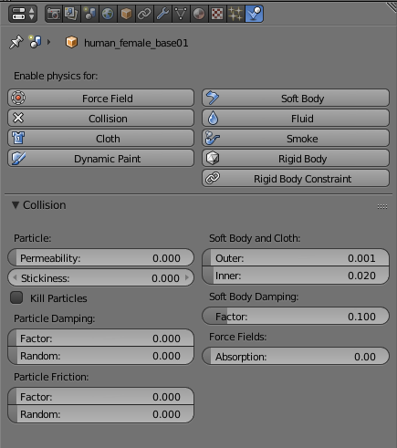
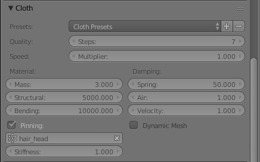
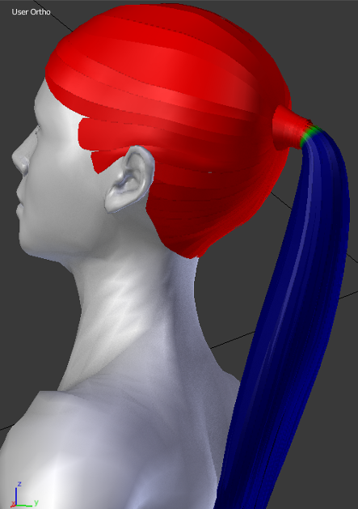

Development progress and video test of polygonal hair
01 July 2017
During these weeks the code of the lab has greatly improved. The cleaning of functions and the new abstraction layer that will facilitate the porting to Blender 2.8 are almost ready. About 80% of the new GUI design is already implemented. The algorithm of proxy is improved, with the addition of two very important new features: "Keep above surface" and "proxy offset". These new features will permit to fix most of cases of clothes-skin penetration.
In parallel with the code development, and strictly related to the proxy system, there is the basic hair library, already descripted in the previous article. Making a very high quality polygonal hair is not only matter of a good shader and a good look in static poses. The geometry must also work during the animations without requiring additional efforts. The video shows the result of a quick test that uses the standard Blender clothes system.
The settings of collision object, hair object and weight group used for hair pinning are in the images below.


